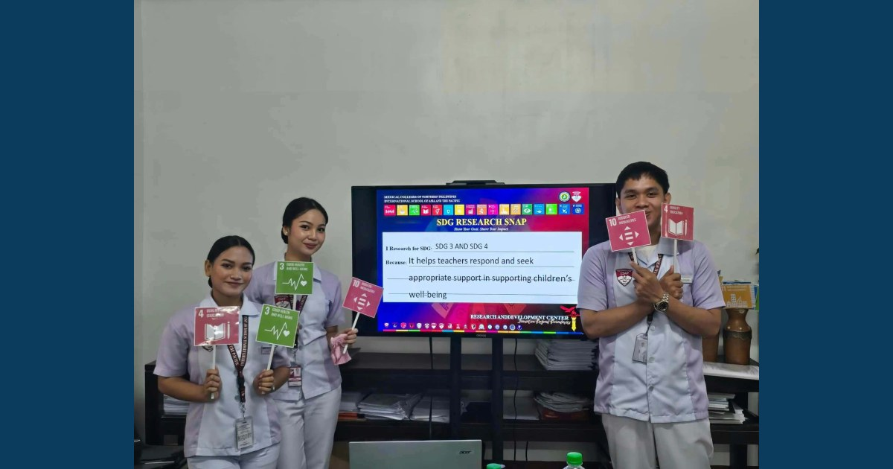

ISAP 4th Year BS Psychology Students Strengthen Research Competence Through Proposal Defense

ISAP conducted the 4th Year BS Psychology Research Proposal Defense on October 28–29, 2026, strengthening research communication, critical inquiry, and scholarly engagement among psychology students.
Read full article